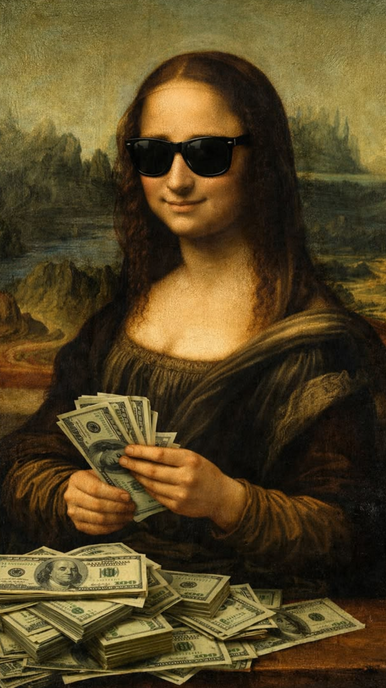
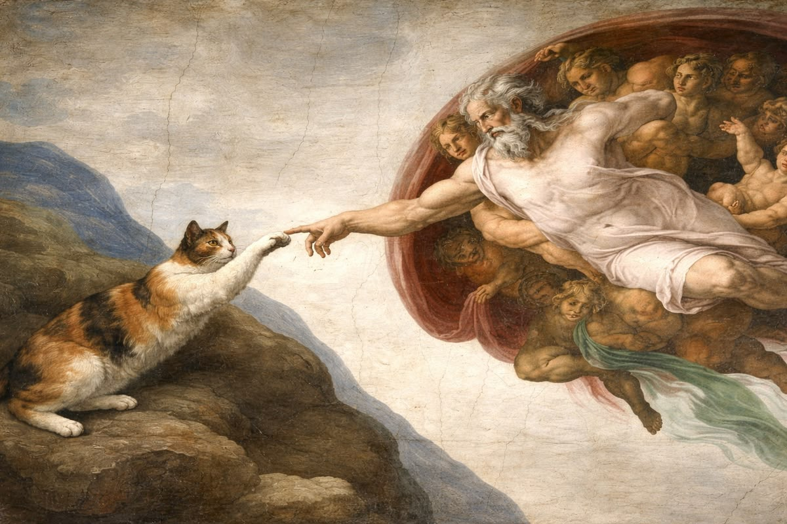
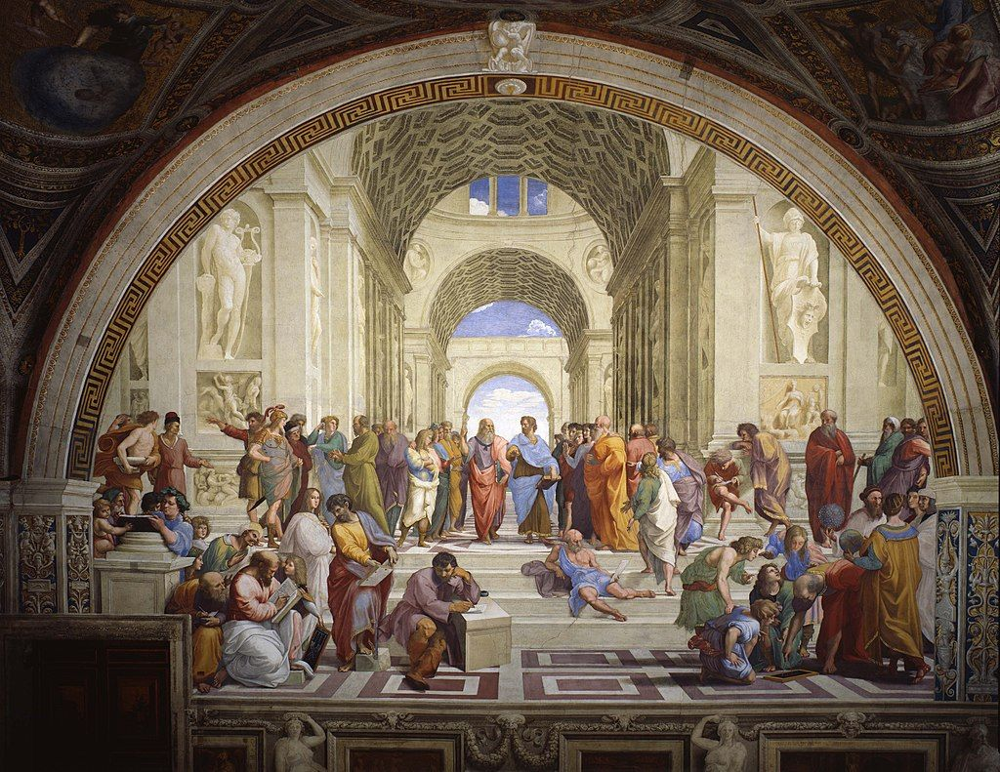
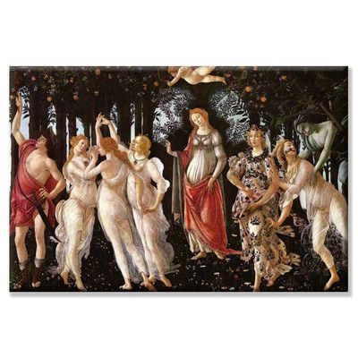

| Картина | Изображение | Автор | Интересный факт | Подробнее |
|---|---|---|---|---|
| «Мона Лиза» около 1503–1519 |
 |
Леонардо да Винчи | В 1911 году картину украли из Лувра. Её вынес сотрудник музея, и нашли «Мону Лизу» только через два года — в Италии. | Читать |
| «Сотворение Адама» около 1512 |
 |
Микеланджело Буонарроти | Это фреска на потолке Сикстинской капеллы. Некоторые учёные заметили, что фигура Бога с ангелами по форме напоминает человеческий мозг. | Читать |
| «Афинская школа» 1509–1511 |
 |
Рафаэль Санти | Философа Платона Рафаэль написал с лицом Леонардо да Винчи, а себя самого изобразил среди персонажей в правой части фрески. | Читать |
| «Весна» около 1482 |
 |
Сандро Боттичелли | Ботаники насчитали на картине около 190 видов цветов, и большинство из них можно узнать — Боттичелли рисовал их очень точно. | Читать |